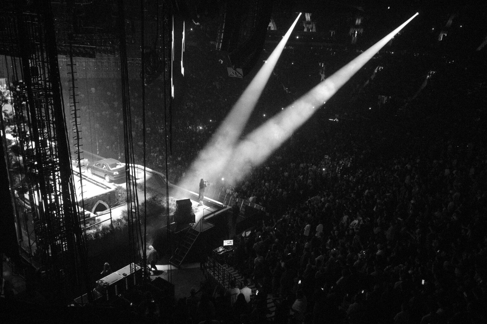

Performance study
Spotlight
Two beams cut through the arena, isolating a performer and a waiting car while the surrounding crowd recedes into darkness.
Back to camera canvas →
Performance study
Two beams cut through the arena, isolating a performer and a waiting car while the surrounding crowd recedes into darkness.
Back to camera canvas →